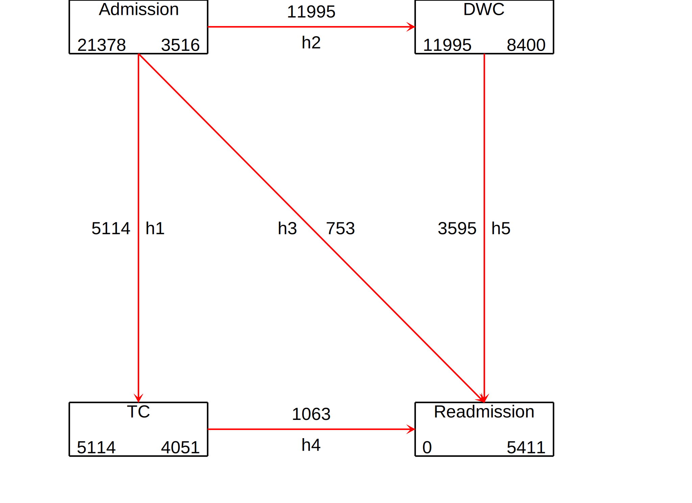

Database (step 1)
Date created: 22:33:32 25 Jul 2021.
Install commands that are unavailable or out of date.
. *<< dd_do : noout > >
. clear all
. *https://onlinelibrary.wiley.com/doi/epdf/10.1002/sim.8894
. *https://pclambert.net/pdf/Stata_Nordic2019_Lambert.pdf
. *https://slidetodoc.com/automated-reports-using-stata-chuck-huber-ph-d/
. *~Mi unidad\Alvacast\SISTRAT 2019 (github)\_supp_mstates\stata\12874_2020_1192_MOESM1_ESM.docx
. *https://opr.princeton.edu/workshops/Downloads/2015May_StataGraphicsKoffman.pdf
. *http://www.bruunisejs.dk/StataHacks/My%20commands/matprint/matprint_demo/
. *https://pure.au.dk/portal/files/140882936/ScientificWorkInStataGoneEasy.pdf
. *https://www.stata.com/meeting/nordic-and-baltic18/slides/nordic-and-baltic18_Bruun.pdf
. *https://github.com/dvorakt/TIER_exercises/blob/master/dyndoc_debt_growth/debt%20and%20growth%20stata%20dyndoc.do
.
. cap noi which predictms
c:\ado\plus\p\predictms.ado
*! version 4.3.0 14mar2021 MJC
. if _rc==111 {
. cap noi net install multistate, from("https://www.mjcrowther.co.uk/code/multistate")
. }
. cap noi which merlin
c:\ado\plus\m\merlin.ado
*! version 2.0.2 19mar2021 MJC
. if _rc==111 {
. cap noi net install merlin, from("https://www.mjcrowther.co.uk/code/merlin/")
. }
. cap noi which sumat
c:\ado\plus\s\sumat.ado
*! Part of package matrixtools v. 0.28
*! Support: Niels Henrik Bruun, niels.henrik.bruun@gmail.com
*! 2021-01-03 toxl added
. if _rc==111 {
. cap noi scc install matrixtools
. }
. cap noi which estwrite
c:\ado\plus\e\estwrite.ado
*! version 1.2.4 04sep2009
*! version 1.0.1 15may2007 (renamed from -eststo- to -estwrite-; -append- added)
*! version 1.0.0 29apr2005 Ben Jann (ETH Zurich)
. if _rc==111 {
. cap noi ssc install estwrite
. }
. cap noi which winsor2
c:\ado\plus\w\winsor2.ado
*! Inspirit of -winsor-(NJ Cox) and -winsorizeJ-(J Caskey)
*! Lian Yujun, arlionn@163.com, 2013-12-25
*! 1.1 2014.12.16
. if _rc==111 {
. cap noi ssc install winsor2
. }
.
We need to obtain the file and the work folder.
. mata : st_numscalar("OK", direxists("/volumes/sdrive/data//"))
. if scalar(OK) == 1 {
. cap noi cd "/volumes/sdrive/data//"
. global pathdata "/volumes/sdrive/data//"
. di "Location= ${pathdata}; Date: `c(current_date)', considering an OS `c(os)' for the user: `c(username)'"
. }
. else display "This file does not exist"
This file does not exist
.
. mata : st_numscalar("OK", direxists("E:\Mi unidad\Alvacast\SISTRAT 2019 (github)\_WO vs MG\"))
. if scalar(OK) == 1 {
. cap noi cd "E:\Mi unidad\Alvacast\SISTRAT 2019 (github)\_WO vs MG"
E:\Mi unidad\Alvacast\SISTRAT 2019 (github)\_WO vs MG
. global pathdata "E:\Mi unidad\Alvacast\SISTRAT 2019 (github)\_WO vs MG"
. global pathdata2 "E:/Mi unidad/Alvacast/SISTRAT 2019 (github)/_WO vs MG/"
. di "Location= ${pathdata}; Date: `c(current_date)', considering an OS `c(os)' for the user: `c(username)'"
Location= E:\Mi unidad\Alvacast\SISTRAT 2019 (github)\_WO vs MG; Date: 25 Jul 2021, considering an OS Windows for the user: andre
. }
. else display "This file does not exist"
.
. mata : st_numscalar("OK", direxists("C:\Users\CISS Fondecyt\Mi unidad\Alvacast\SISTRAT 2019 (github)\_WO vs MG\"))
. if scalar(OK) == 1 {
. cap noi cd "C:\Users\CISS Fondecyt\Mi unidad\Alvacast\SISTRAT 2019 (github)"
. global pathdata "C:\Users\CISS Fondecyt\Mi unidad\Alvacast\SISTRAT 2019 (github)\_WO vs MG"
. global pathdata2 "C:/Users/CISS Fondecyt/Mi unidad/Alvacast/SISTRAT 2019 (github)/_WO vs MG/"
. di "Location= ${pathdata}; Date: `c(current_date)', considering an OS `c(os)' for the user: `c(username)'"
. }
. else display "This file does not exist"
This file does not exist
.
. mata : st_numscalar("OK", direxists("C:\Users\andre\Desktop\_WO vs MG\"))
. if scalar(OK) == 1 {
. cap noi cd "C:\Users\andre\Desktop\_WO vs MG"
. global pathdata "C:\Users\andre\Desktop\_mult_state_ags"
. global pathdata2 "C:/Users/andre/Desktop/_mult_state_ags/"
. di "Location= ${pathdata}; Date: `c(current_date)', considering an OS `c(os)' for the user: `c(username)'"
. }
. else display "This file does not exist"
This file does not exist
.
. mata : st_numscalar("OK", direxists("C:\Users\CISS Fondecyt\OneDrive\Documentos\"))
. if scalar(OK) == 1 {
. cap noi cd "C:\Users\CISS Fondecyt\Mi unidad\Alvacast\SISTRAT 2019 (github)\_WO vs MG"
. global pathdata "C:\Users\CISS Fondecyt\Mi unidad\Alvacast\SISTRAT 2019 (github)\_WO vs MG"
. global pathdata2 "C:/Users/CISS Fondecyt/Mi unidad/Alvacast/SISTRAT 2019 (github)/_WO vs MG/"
. di "Location= ${pathdata}; Date: `c(current_date)', considering an OS `c(os)' for the user: `c(username)'"
. }
. else display "This file does not exist"
This file does not exist
.
Path data= E:\Mi unidad\Alvacast\SISTRAT 2019 (github)_WO vs MG;
Timestamp: 25 Jul 2021, considering that is a Windows OS for the username: andre
First we open the files and drop the variables that would mistakenly amplify the sample, and define labels.
The file is located and named as: E:/Mi unidad/Alvacast/SISTRAT 2019 (github)/_WO vs MG/four_st_msprep.dta
Then we define the transition matrix:
| 1 | 2 | 3 | |
| 4 | |||
| 5 | |||
and transform the database in a long format, according to the specifications and the transition matrix.
Finally, the database adopt the following structure:

Set the database as a renewal time.
. *stset _stop, enter(_start) failure(_status=1) //* scale(365.25) id(id)
.
. *file:///G:/Mi%20unidad/Alvacast/SISTRAT%202019%20(github)/_supp_mstates/stata/crowther2017%20(1).pdf
. stset _time, failure(_status==1)
failure event: _status == 1
obs. time interval: (0, _time]
exit on or before: failure
------------------------------------------------------------------------------
81,243 total observations
0 exclusions
------------------------------------------------------------------------------
81,243 observations remaining, representing
22,520 failures in single-record/single-failure data
46651531 total analysis time at risk and under observation
at risk from t = 0
earliest observed entry t = 0
last observed exit t = 4,130
.
=============================================================================
Aalen-Johanssen, Non-parametric transition probabilities
=============================================================================
Generated an Aalen-Johanssen estimator to obtain the transition probabilities of the data from the time 0 (from admission). For this, we separated the transition probabilities according to the setting at baseline.
. *http://fmwww.bc.edu/repec/bocode/m/msaj.ado
. msaj, transmatrix(mat_four_states) by(tipo_de_programa_2) ci
. rename (P_AJ_*) (ajprob*)
To generate figures, we select the valid transitions


=============================================================================
Parametric Models
=============================================================================
Intercept-only
Generamos una lista de modelos paramétricos sin variables predictivas. Entre ellas, el Exponencial, weibull, gompertz, log-logistico, log-normal y gama generalizado. Adicionalmente, se definió una serie de modelos royston-palmar con una función de splines cúblicos restringidos, en que los knots (#gl -1) se definen en cada percentil de la distribución. En este caso, no existe una variable perdictiva más que la función de riesgo acumulado. Guardamos las estimaciones en el archivo `parmodels_m_ago_c’.
. forvalues i = 1/5 {
2. // Exponential
. set seed 2125
3. qui cap merlin (_time if _trans == `i', family(exponential, fail(_status)))
4. estimates store m`i'_exp
5. *estimates save "${pathdata2}parmodels.ster", replace
. // Weibull
. set seed 2125
6. qui cap merlin (_time if _trans == `i', family(weibull, fail(_status)))
7. estimates store m`i'_weib
8. *estimates save "${pathdata2}parmodels.ster", append
. // Gompertz
. set seed 2125
9. qui cap merlin (_time if _trans == `i', family(gompertz, fail(_status)))
10. estimates store m`i'_gom
11. *estimates save "${pathdata2}parmodels.ster", append
. // Log logistic
. set seed 2125
12. qui cap merlin (_time if _trans == `i', family(loglogistic, fail(_status)))
13. estimates store m`i'_logl
14. *estimates save "${pathdata2}parmodels.ster", append
. // Log normal
. set seed 2125
15. qui cap merlin (_time if _trans == `i', family(lognormal, fail(_status)))
16. estimates store m`i'_logn
17. *estimates save "${pathdata2}parmodels.ster", append
. // Generalised gamma
. set seed 2125
18. qui cap merlin (_time if _trans == `i', family(ggamma, fail(_status)))
19. estimates store m`i'_ggam
20. *estimates save "${pathdata2}parmodels.ster", append
. // Royston Parmar models
. set seed 2125
21. forvalues j=2/10 {
22. qui cap merlin (_time if _trans == `i', family(rp, df(`j') fail(_status)))
23. estimates store m`i'_rp`j'
24. *estimates save "${pathdata2}parmodels.ster", append
. }
25. }
.
. estwrite _all using "${pathdata2}parmodels_m_ago_c.sters", replace
(saving m1_exp)
(saving m1_weib)
(saving m1_gom)
(saving m1_logl)
(saving m1_logn)
(saving m1_ggam)
(saving m1_rp2)
(saving m1_rp3)
(saving m1_rp4)
(saving m1_rp5)
(saving m1_rp6)
(saving m1_rp7)
(saving m1_rp8)
(saving m1_rp9)
(saving m1_rp10)
(saving m2_exp)
(saving m2_weib)
(saving m2_gom)
(saving m2_logl)
(saving m2_logn)
(saving m2_ggam)
(saving m2_rp2)
(saving m2_rp3)
(saving m2_rp4)
(saving m2_rp5)
(saving m2_rp6)
(saving m2_rp7)
(saving m2_rp8)
(saving m2_rp9)
(saving m2_rp10)
(saving m3_exp)
(saving m3_weib)
(saving m3_gom)
(saving m3_logl)
(saving m3_logn)
(saving m3_ggam)
(saving m3_rp2)
(saving m3_rp3)
(saving m3_rp4)
(saving m3_rp5)
(saving m3_rp6)
(saving m3_rp7)
(saving m3_rp8)
(saving m3_rp9)
(saving m3_rp10)
(saving m4_exp)
(saving m4_weib)
(saving m4_gom)
(saving m4_logl)
(saving m4_logn)
(saving m4_ggam)
(saving m4_rp2)
(saving m4_rp3)
(saving m4_rp4)
(saving m4_rp5)
(saving m4_rp6)
(saving m4_rp7)
(saving m4_rp8)
(saving m4_rp9)
(saving m4_rp10)
(saving m5_exp)
(saving m5_weib)
(saving m5_gom)
(saving m5_logl)
(saving m5_logn)
(saving m5_ggam)
(saving m5_rp2)
(saving m5_rp3)
(saving m5_rp4)
(saving m5_rp5)
(saving m5_rp6)
(saving m5_rp7)
(saving m5_rp8)
(saving m5_rp9)
(saving m5_rp10)
(file E:/Mi unidad/Alvacast/SISTRAT 2019 (github)/_WO vs MG/parmodels_m_ago_c.sters saved)
Selected the models with best AICs.
| comb | ||||||
| N | ll0 | ll | df | AIC | BIC | |
| m1_exp | 5114 | . | -42884.06 | 1 | 85770.11 | 85776.65 |
| m1_weib | 5114 | . | -42823.14 | 2 | 85650.28 | 85663.36 |
| m1_gom | 5114 | . | -2386447 | 0 | 4772894 | 4772894 |
| m1_logl | 5114 | . | -41827.54 | 2 | 83659.08 | 83672.15 |
| m1_logn | 5114 | . | -41821.05 | 2 | 83646.11 | 83659.19 |
| m1_ggam | 5114 | . | -41806.5 | 3 | 83618.99 | 83638.61 |
| m1_rp2 | 5114 | . | -40744.76 | 3 | 81495.53 | 81515.15 |
| m1_rp3 | 5114 | . | -40058.99 | 4 | 80125.97 | 80152.13 |
| m1_rp4 | 5114 | . | -40012.74 | 5 | 80035.48 | 80068.18 |
| m1_rp5 | 5114 | . | -40005.74 | 6 | 80023.48 | 80062.72 |
| m1_rp6 | 5114 | . | -39994.12 | 7 | 80002.25 | 80048.02 |
| m1_rp7 | 5114 | . | -39995.2 | 8 | 80006.4 | 80058.72 |
| m1_rp8 | 5114 | . | -39995.56 | 9 | 80009.13 | 80067.98 |
| m1_rp9 | 5114 | . | -39992.83 | 10 | 80005.66 | 80071.05 |
| m1_rp10 | 5114 | . | -39990.7 | 11 | 80003.4 | 80075.33 |
| m2_exp | 11995 | . | -90359.67 | 1 | 180721.3 | 180728.7 |
| m2_weib | 11995 | . | -89050.63 | 2 | 178105.3 | 178120 |
| m2_gom | 11995 | . | -5898645 | 0 | 1.18e+07 | 1.18e+07 |
| m2_logl | 11995 | . | -87536.2 | 2 | 175076.4 | 175091.2 |
| m2_logn | 11995 | . | -87520.25 | 2 | 175044.5 | 175059.3 |
| m2_ggam | 11995 | . | -87342.42 | 3 | 174690.8 | 174713 |
| m2_rp2 | 11995 | . | -86545.78 | 3 | 173097.6 | 173119.7 |
| m2_rp3 | 11995 | . | -85991.75 | 4 | 171991.5 | 172021.1 |
| m2_rp4 | 11995 | . | -85960.82 | 5 | 171931.6 | 171968.6 |
| m2_rp5 | 11995 | . | -85923.26 | 6 | 171858.5 | 171902.9 |
| m2_rp6 | 11995 | . | -85912.96 | 7 | 171839.9 | 171891.7 |
| m2_rp7 | 11995 | . | -85906.07 | 8 | 171828.1 | 171887.3 |
| m2_rp8 | 11995 | . | -85899.92 | 9 | 171817.8 | 171884.4 |
| m2_rp9 | 11995 | . | -85893.69 | 10 | 171807.4 | 171881.3 |
| m2_rp10 | 11995 | . | -85888.02 | 11 | 171798 | 171879.4 |
| m3_exp | 753 | . | -7756.872 | 1 | 15515.74 | 15520.37 |
| m3_weib | 753 | . | -7653.266 | 2 | 15310.53 | 15319.78 |
| m3_gom | 753 | . | -263603.6 | 0 | 527207.2 | 527207.2 |
| m3_logl | 753 | . | -7627.49 | 2 | 15258.98 | 15268.23 |
| m3_logn | 753 | . | -7562.243 | 2 | 15128.49 | 15137.73 |
| m3_ggam | 753 | . | -7531.134 | 3 | 15068.27 | 15082.14 |
| m3_rp2 | 753 | . | -7532.96 | 3 | 15071.92 | 15085.79 |
| m3_rp3 | 753 | . | -7531.983 | 4 | 15071.97 | 15090.46 |
| m3_rp4 | 753 | . | -7527.519 | 5 | 15065.04 | 15088.16 |
| m3_rp5 | 753 | . | -7526.838 | 6 | 15065.68 | 15093.42 |
| m3_rp6 | 753 | . | -7526.533 | 7 | 15067.07 | 15099.44 |
| m3_rp7 | 753 | . | -7526.515 | 8 | 15069.03 | 15106.02 |
| m3_rp8 | 753 | . | -7526.161 | 9 | 15070.32 | 15111.94 |
| m3_rp9 | 753 | . | -7526.006 | 10 | 15072.01 | 15118.25 |
| m3_rp10 | 753 | . | -7526.325 | 11 | 15074.65 | 15125.51 |
| m4_exp | 1063 | . | -10273.44 | 1 | 20548.89 | 20553.86 |
| m4_weib | 1063 | . | -9989.578 | 2 | 19983.16 | 19993.09 |
| m4_gom | 1063 | . | -483400.2 | 0 | 966800.4 | 966800.4 |
| m4_logl | 1063 | . | -9989.43 | 2 | 19982.86 | 19992.8 |
| m4_logn | 1063 | . | -10003.69 | 2 | 20011.38 | 20021.32 |
| m4_ggam | 1063 | . | -9989.19 | 3 | 19984.38 | 19999.29 |
| m4_rp2 | 1063 | . | -9989.435 | 3 | 19984.87 | 19999.78 |
| m4_rp3 | 1063 | . | -9989.064 | 4 | 19986.13 | 20006 |
| m4_rp4 | 1063 | . | -9989.059 | 5 | 19988.12 | 20012.96 |
| m4_rp5 | 1063 | . | -9988.606 | 6 | 19989.21 | 20019.02 |
| m4_rp6 | 1063 | . | -9984.836 | 7 | 19983.67 | 20018.45 |
| m4_rp7 | 1063 | . | -9981.496 | 8 | 19978.99 | 20018.74 |
| m4_rp8 | 1063 | . | -9980.155 | 9 | 19978.31 | 20023.03 |
| m4_rp9 | 1063 | . | -9977.998 | 10 | 19976 | 20025.68 |
| m4_rp10 | 1063 | . | -9975.587 | 11 | 19973.17 | 20027.83 |
| m5_exp | 3595 | . | -33739.63 | 1 | 67481.26 | 67487.45 |
| m5_weib | 3595 | . | -32674.52 | 2 | 65353.03 | 65365.41 |
| m5_gom | 3595 | . | -1654387 | 0 | 3308775 | 3308775 |
| m5_logl | 3595 | . | -32639 | 2 | 65282.01 | 65294.38 |
| m5_logn | 3595 | . | -32631.05 | 2 | 65266.11 | 65278.48 |
| m5_ggam | 3595 | . | -32625.6 | 3 | 65257.2 | 65275.76 |
| m5_rp2 | 3595 | . | -32628.46 | 3 | 65262.93 | 65281.49 |
| m5_rp3 | 3595 | . | -32607.52 | 4 | 65223.03 | 65247.78 |
| m5_rp4 | 3595 | . | -32606.92 | 5 | 65223.83 | 65254.77 |
| m5_rp5 | 3595 | . | -32607.36 | 6 | 65226.73 | 65263.85 |
| m5_rp6 | 3595 | . | -32605.59 | 7 | 65225.18 | 65268.49 |
| m5_rp7 | 3595 | . | -32604.57 | 8 | 65225.14 | 65274.63 |
| m5_rp8 | 3595 | . | -32603.15 | 9 | 65224.31 | 65279.99 |
| m5_rp9 | 3595 | . | -32601.98 | 10 | 65223.96 | 65285.83 |
| m5_rp10 | 3595 | . | -32601.12 | 11 | 65224.24 | 65292.3 |
In case of the more flexible parametric models (non-standard), we selected the models that showed the best trade-off between lower complexity and better fit.
With covariables
Posteriorly, we compared AICs with covariates. We added the time of arrival as a covariate to each transition (excluding the first).
. local stname `" "tipo_de_programa_2 edad_al_ing_grupos escolaridad_rec sus_principal_mod freq_cons_sus_prin compromiso_biopsicosocial tenencia_de_la_viv
> ienda_mod num_otras_sus_mod numero_de_hijos_mod_rec tipo_de_plan_res" "tipo_de_programa_2 edad_al_ing_grupos escolaridad_rec sus_principal_mod freq_cons
> _sus_prin compromiso_biopsicosocial tenencia_de_la_vivienda_mod num_otras_sus_mod numero_de_hijos_mod_rec tipo_de_plan_res" "tipo_de_programa_2 edad_al_
> ing_grupos escolaridad_rec sus_principal_mod freq_cons_sus_prin compromiso_biopsicosocial tenencia_de_la_vivienda_mod num_otras_sus_mod numero_de_hijos_
> mod_rec tipo_de_plan_res" "tipo_de_programa_2 edad_al_ing_grupos escolaridad_rec sus_principal_mod freq_cons_sus_prin compromiso_biopsicosocial tenencia
> _de_la_vivienda_mod num_otras_sus_mod numero_de_hijos_mod_rec tipo_de_plan_res _start" "tipo_de_programa_2 edad_al_ing_grupos escolaridad_rec sus_princi
> pal_mod freq_cons_sus_prin compromiso_biopsicosocial tenencia_de_la_vivienda_mod num_otras_sus_mod numero_de_hijos_mod_rec tipo_de_plan_res _start" "'
.
. forvalues i = 1/5 {
2. gettoken state stname : stname
3. // Exponential
. set seed 2125
4. qui cap merlin (_time `state' if _trans == `i', family(exponential, fail(_status)))
5. estimates store m2_`i'_exp
6. *estimates save "${pathdata2}parmodels.ster", append
. // Weibull
. set seed 2125
7. qui cap merlin (_time `state' if _trans == `i', family(weibull, fail(_status)))
8. estimates store m2_`i'_weib
9. *estimates save "${pathdata2}parmodels.ster", append
. // Gompertz
. set seed 2125
10. qui cap merlin (_time `state' if _trans == `i', family(gompertz, fail(_status)))
11. estimates store m2_`i'_gom
12. *estimates save "${pathdata2}parmodels.ster", append
. // Log logistic
. set seed 2125
13. qui cap merlin (_time `state' if _trans == `i', family(loglogistic, fail(_status)))
14. estimates store m2_`i'_logl
15. *estimates save "${pathdata2}parmodels.ster", append
. // Log normal
. set seed 2125
16. qui cap merlin (_time `state' if _trans == `i', family(lognormal, fail(_status)))
17. estimates store m2_`i'_logn
18. *estimates save "${pathdata2}parmodels.ster", append
. // Generalised gamma
. set seed 2125
19. qui cap merlin (_time `state' if _trans == `i', family(ggamma, fail(_status)))
20. estimates store m2_`i'_ggam
21. *estimates save "${pathdata2}parmodels.ster", append
. // Royston Parmar models
. set seed 2125
22. forvalues j=2/10 {
23. qui cap merlin (_time `state' if _trans == `i', family(rp, df(`j') fail(_status)))
24. estimates store m2_`i'_rp`j'
25. *estimates save "${pathdata2}parmodels.ster", append
. }
26. }
.
. estwrite _all using "${pathdata2}parmodels_m2_ago_c.sters", replace
(saving m2_1_exp)
(saving m2_1_weib)
(saving m2_1_gom)
(saving m2_1_logl)
(saving m2_1_logn)
(saving m2_1_ggam)
(saving m2_1_rp2)
(saving m2_1_rp3)
(saving m2_1_rp4)
(saving m2_1_rp5)
(saving m2_1_rp6)
(saving m2_1_rp7)
(saving m2_1_rp8)
(saving m2_1_rp9)
(saving m2_1_rp10)
(saving m2_2_exp)
(saving m2_2_weib)
(saving m2_2_gom)
(saving m2_2_logl)
(saving m2_2_logn)
(saving m2_2_ggam)
(saving m2_2_rp2)
(saving m2_2_rp3)
(saving m2_2_rp4)
(saving m2_2_rp5)
(saving m2_2_rp6)
(saving m2_2_rp7)
(saving m2_2_rp8)
(saving m2_2_rp9)
(saving m2_2_rp10)
(saving m2_3_exp)
(saving m2_3_weib)
(saving m2_3_gom)
(saving m2_3_logl)
(saving m2_3_logn)
(saving m2_3_ggam)
(saving m2_3_rp2)
(saving m2_3_rp3)
(saving m2_3_rp4)
(saving m2_3_rp5)
(saving m2_3_rp6)
(saving m2_3_rp7)
(saving m2_3_rp8)
(saving m2_3_rp9)
(saving m2_3_rp10)
(saving m2_4_exp)
(saving m2_4_weib)
(saving m2_4_gom)
(saving m2_4_logl)
(saving m2_4_logn)
(saving m2_4_ggam)
(saving m2_4_rp2)
(saving m2_4_rp3)
(saving m2_4_rp4)
(saving m2_4_rp5)
(saving m2_4_rp6)
(saving m2_4_rp7)
(saving m2_4_rp8)
(saving m2_4_rp9)
(saving m2_4_rp10)
(saving m2_5_exp)
(saving m2_5_weib)
(saving m2_5_gom)
(saving m2_5_logl)
(saving m2_5_logn)
(saving m2_5_ggam)
(saving m2_5_rp2)
(saving m2_5_rp3)
(saving m2_5_rp4)
(saving m2_5_rp5)
(saving m2_5_rp6)
(saving m2_5_rp7)
(saving m2_5_rp8)
(saving m2_5_rp9)
(saving m2_5_rp10)
(file E:/Mi unidad/Alvacast/SISTRAT 2019 (github)/_WO vs MG/parmodels_m2_ago_c.sters saved)
Selected the models with lower fit indices.
| comb | ||||||
| N | ll0 | ll | df | AIC | BIC | |
| m2_1_exp | 5114 | . | -42681.08 | 11 | 85384.16 | 85456.09 |
| m2_1_weib | 5114 | . | -42603.86 | 12 | 85231.72 | 85310.19 |
| m2_1_gom | 5114 | . | -1619171 | 0 | 3238343 | 3238343 |
| m2_1_logl | 5114 | . | -41671.12 | 12 | 83366.24 | 83444.72 |
| m2_1_logn | 5114 | . | -41672.41 | 12 | 83368.83 | 83447.31 |
| m2_1_ggam | 5114 | . | -41652.15 | 13 | 83330.3 | 83415.32 |
| m2_1_rp2 | 5114 | . | -40620.22 | 13 | 81266.44 | 81351.45 |
| m2_1_rp3 | 5114 | . | -39929.29 | 14 | 79886.57 | 79978.13 |
| m2_1_rp4 | 5114 | . | -39886.27 | 15 | 79802.54 | 79900.63 |
| m2_1_rp5 | 5114 | . | -39879.28 | 16 | 79790.57 | 79895.2 |
| m2_1_rp6 | 5114 | . | -39868.14 | 17 | 79770.28 | 79881.46 |
| m2_1_rp7 | 5114 | . | -39869.16 | 18 | 79774.32 | 79892.04 |
| m2_1_rp8 | 5114 | . | -39869.45 | 19 | 79776.9 | 79901.15 |
| m2_1_rp9 | 5114 | . | -39866.63 | 20 | 79773.26 | 79904.06 |
| m2_1_rp10 | 5114 | . | -39864.43 | 21 | 79770.85 | 79908.19 |
| m2_2_exp | 11995 | . | -89890.02 | 11 | 179802 | 179883.4 |
| m2_2_weib | 11995 | . | -88642.81 | 12 | 177309.6 | 177398.3 |
| m2_2_gom | 11995 | . | -86249.5 | 12 | 172523 | 172611.7 |
| m2_2_logl | 11995 | . | -87039.08 | 12 | 174102.2 | 174190.9 |
| m2_2_logn | 11995 | . | -87027.32 | 12 | 174078.6 | 174167.4 |
| m2_2_ggam | 11995 | . | -86720.27 | 13 | 173466.5 | 173562.6 |
| m2_2_rp2 | 11995 | . | -86115.58 | 13 | 172257.2 | 172353.3 |
| m2_2_rp3 | 11995 | . | -85534.05 | 14 | 171096.1 | 171199.6 |
| m2_2_rp4 | 11995 | . | -85504.45 | 15 | 171038.9 | 171149.8 |
| m2_2_rp5 | 11995 | . | -85465.79 | 16 | 170963.6 | 171081.9 |
| m2_2_rp6 | 11995 | . | -85454.96 | 17 | 170943.9 | 171069.6 |
| m2_2_rp7 | 11995 | . | -85447.72 | 18 | 170931.4 | 171064.5 |
| m2_2_rp8 | 11995 | . | -85441.27 | 19 | 170920.5 | 171061 |
| m2_2_rp9 | 11995 | . | -85434.75 | 20 | 170909.5 | 171057.3 |
| m2_2_rp10 | 11995 | . | -85428.87 | 21 | 170899.7 | 171055 |
| m2_3_exp | 753 | . | -7721.317 | 11 | 15464.63 | 15515.5 |
| m2_3_weib | 753 | . | -7621.376 | 12 | 15266.75 | 15322.24 |
| m2_3_gom | 753 | . | -7709.223 | 12 | 15442.45 | 15497.94 |
| m2_3_logl | 753 | . | -7592.484 | 12 | 15208.97 | 15264.46 |
| m2_3_logn | 753 | . | -7527.057 | 12 | 15078.11 | 15133.6 |
| m2_3_ggam | 753 | . | -7494.136 | 13 | 15014.27 | 15074.38 |
| m2_3_rp2 | 753 | . | -7498.044 | 13 | 15022.09 | 15082.2 |
| m2_3_rp3 | 753 | . | -7497.156 | 14 | 15022.31 | 15087.05 |
| m2_3_rp4 | 753 | . | -7493.141 | 15 | 15016.28 | 15085.64 |
| m2_3_rp5 | 753 | . | -7492.481 | 16 | 15016.96 | 15090.95 |
| m2_3_rp6 | 753 | . | -7492.132 | 17 | 15018.26 | 15096.87 |
| m2_3_rp7 | 753 | . | -7492.11 | 18 | 15020.22 | 15103.45 |
| m2_3_rp8 | 753 | . | -7491.777 | 19 | 15021.55 | 15109.41 |
| m2_3_rp9 | 753 | . | -7491.623 | 20 | 15023.25 | 15115.73 |
| m2_3_rp10 | 753 | . | -7491.93 | 21 | 15025.86 | 15122.97 |
| m2_4_exp | 1063 | . | -10114.06 | 12 | 20252.11 | 20311.74 |
| m2_4_weib | 1063 | . | -9824.304 | 13 | 19674.61 | 19739.2 |
| m2_4_gom | 1063 | . | -9933.814 | 13 | 19893.63 | 19958.22 |
| m2_4_logl | 1063 | . | -9811.604 | 13 | 19649.21 | 19713.8 |
| m2_4_logn | 1063 | . | -9812.931 | 13 | 19651.86 | 19716.46 |
| m2_4_ggam | 1063 | . | -9809.605 | 14 | 19647.21 | 19716.77 |
| m2_4_rp2 | 1063 | . | -9823.848 | 14 | 19675.7 | 19745.26 |
| m2_4_rp3 | 1063 | . | -9822.815 | 15 | 19675.63 | 19750.16 |
| m2_4_rp4 | 1063 | . | -9822.709 | 16 | 19677.42 | 19756.92 |
| m2_4_rp5 | 1063 | . | -9822.157 | 17 | 19678.31 | 19762.79 |
| m2_4_rp6 | 1063 | . | -9818.375 | 18 | 19672.75 | 19762.19 |
| m2_4_rp7 | 1063 | . | -9815.046 | 19 | 19668.09 | 19762.5 |
| m2_4_rp8 | 1063 | . | -9813.673 | 20 | 19667.35 | 19766.72 |
| m2_4_rp9 | 1063 | . | -9811.489 | 21 | 19664.98 | 19769.32 |
| m2_4_rp10 | 1063 | . | -9809.089 | 22 | 19662.18 | 19771.49 |
| m2_5_exp | 3595 | . | -33549.25 | 12 | 67122.51 | 67196.76 |
| m2_5_weib | 3595 | . | -32488.36 | 13 | 65002.73 | 65083.16 |
| m2_5_gom | 3595 | . | -32662.29 | 13 | 65350.58 | 65431.01 |
| m2_5_logl | 3595 | . | -32435.16 | 13 | 64896.32 | 64976.76 |
| m2_5_logn | 3595 | . | -32417.39 | 13 | 64860.79 | 64941.22 |
| m2_5_ggam | 3595 | . | -32415.29 | 14 | 64858.59 | 64945.21 |
| m2_5_rp2 | 3595 | . | -32440.9 | 14 | 64909.8 | 64996.42 |
| m2_5_rp3 | 3595 | . | -32418.25 | 15 | 64866.5 | 64959.31 |
| m2_5_rp4 | 3595 | . | -32417.69 | 16 | 64867.38 | 64966.38 |
| m2_5_rp5 | 3595 | . | -32418.09 | 17 | 64870.18 | 64975.36 |
| m2_5_rp6 | 3595 | . | -32416.26 | 18 | 64868.51 | 64979.88 |
| m2_5_rp7 | 3595 | . | -32415.24 | 19 | 64868.49 | 64986.04 |
| m2_5_rp8 | 3595 | . | -32413.84 | 20 | 64867.68 | 64991.43 |
| m2_5_rp9 | 3595 | . | -32412.68 | 21 | 64867.36 | 64997.29 |
| m2_5_rp10 | 3595 | . | -32411.82 | 22 | 64867.63 | 65003.75 |
Saved at= 22:40:12 25 Jul 2021